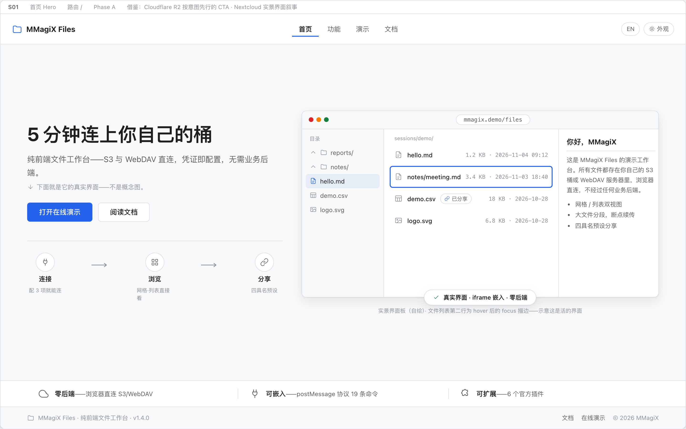
S01首页 Hero
/ · Phase A
借鉴：Cloudflare R2 按意图先行的 CTA · Nextcloud 实景界面叙事
打开可交互版 →
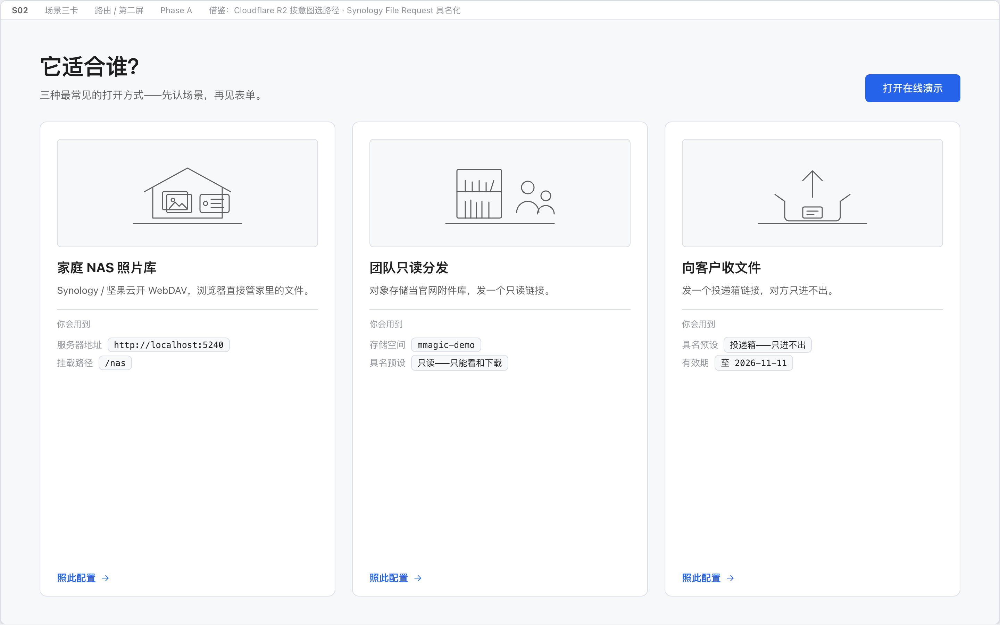
S02场景三卡
/ 第二屏 · Phase A
借鉴：Cloudflare R2 按意图选路径 · Synology File Request 具名化
打开可交互版 →
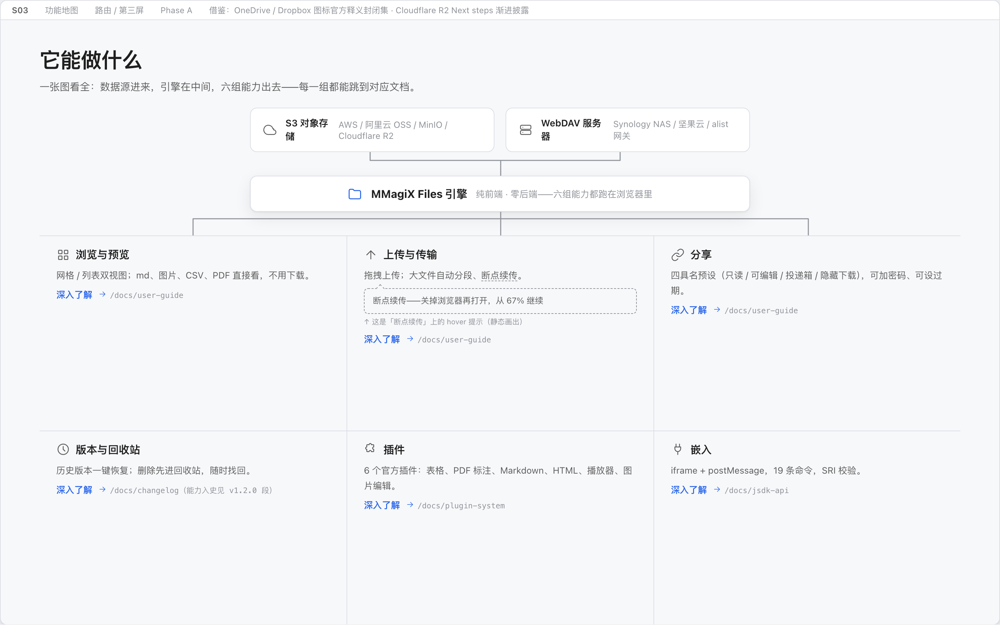
S03功能地图
/ 第三屏 · Phase A
借鉴：OneDrive / Dropbox 图标官方释义封闭集 · Cloudflare R2 Next steps 渐进披露
打开可交互版 →
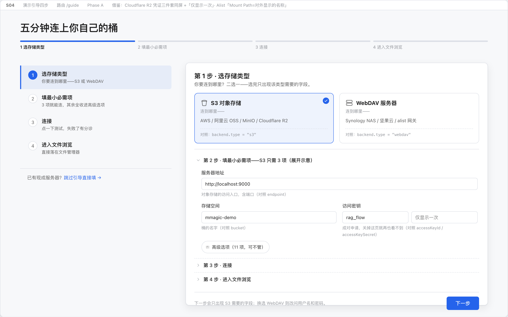
S04演示引导四步
/guide · Phase A
借鉴：Cloudflare R2 凭证三件套同屏 +「仅显示一次」· Alist「Mount Path=对外显示的名称」
打开可交互版 →
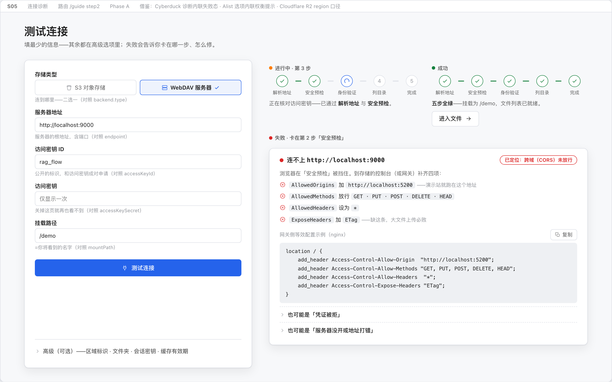
S05连接诊断
/guide step2 · Phase A
借鉴：Cyberduck 诊断内联失败态 · Alist 选项内联权衡提示 · Cloudflare R2 region 口径
打开可交互版 →
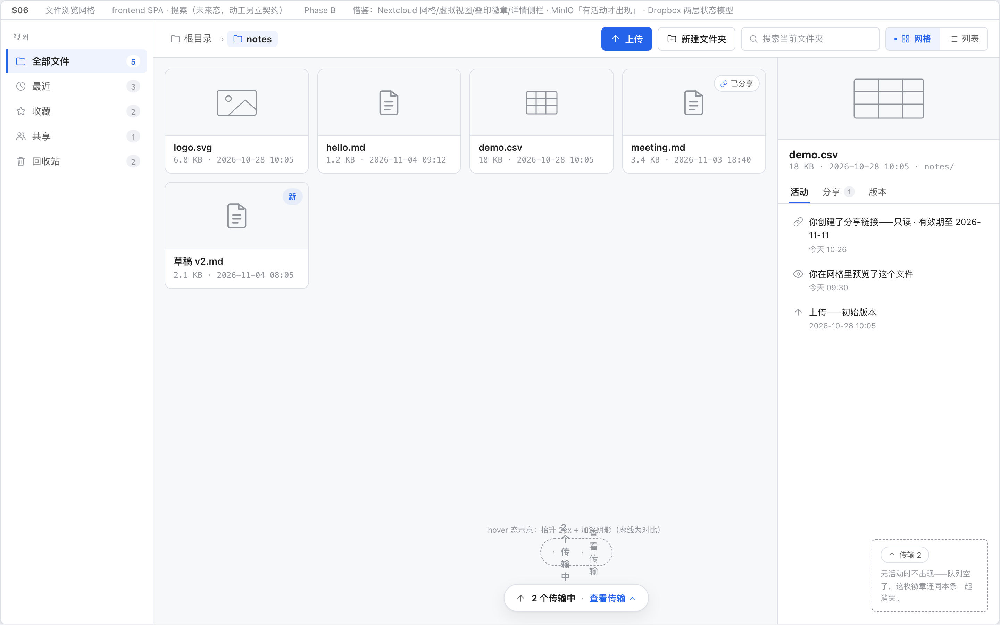
S06文件浏览网格（提案）
frontend SPA 提案 · Phase B
借鉴：Nextcloud 网格 / 虚拟视图 / 叠印徽章 / 详情侧栏 · MinIO「有活动才出现」· Dropbox 两层状态模型
打开可交互版 →
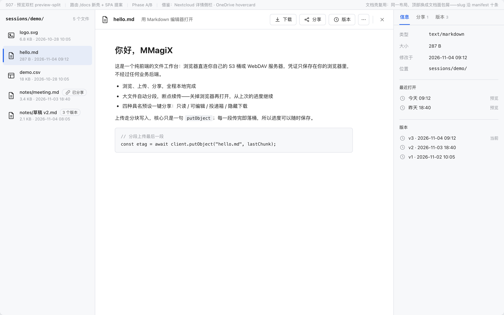
S07预览双栏 preview-split
/docs 新壳 + SPA 提案复用 · Phase A/B
借鉴：Nextcloud 详情侧栏 · OneDrive hovercard
打开可交互版 →
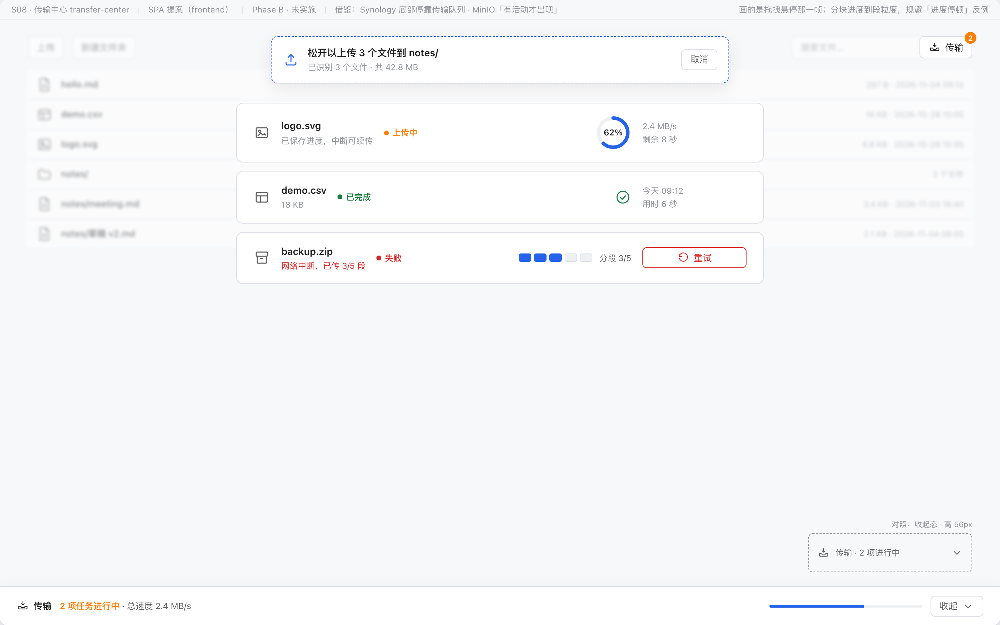
S08传输中心 transfer-center
SPA 提案 · Phase B
借鉴：Synology 底部停靠传输队列 · MinIO「有活动才出现」
打开可交互版 →
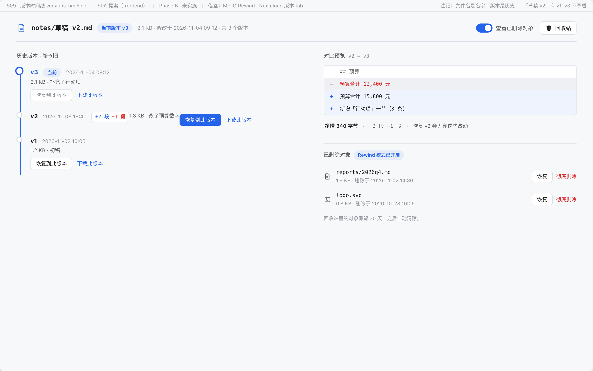
S09版本时间线 versions-timeline
SPA 提案 · Phase B
借鉴：MinIO Rewind · Nextcloud 版本 tab
打开可交互版 →
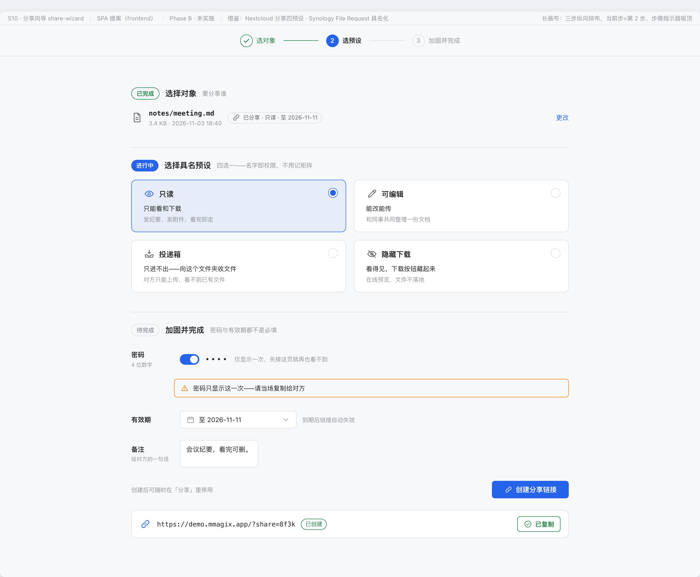
S10分享向导 share-wizard
SPA 提案 · Phase B · 整页长画布
借鉴：Nextcloud 分享四预设 · Synology File Request 具名化
打开可交互版 →
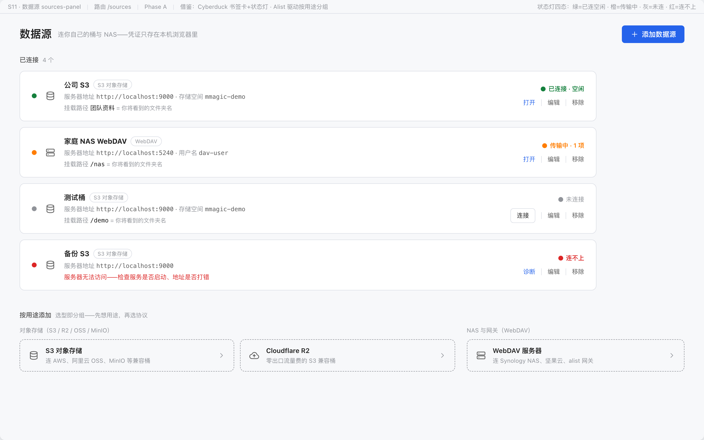
S11数据源 sources-panel
/sources · Phase A
借鉴：Cyberduck 书签卡+状态灯 · Alist 驱动按用途分组
打开可交互版 →
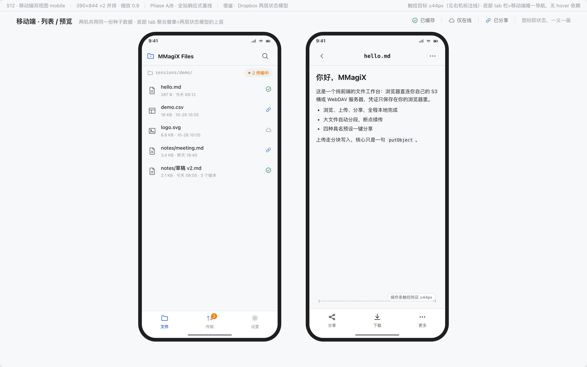
S12移动端双视图 mobile
全站响应式基线 · Phase A/B
借鉴：Dropbox 两层状态模型
打开可交互版 →